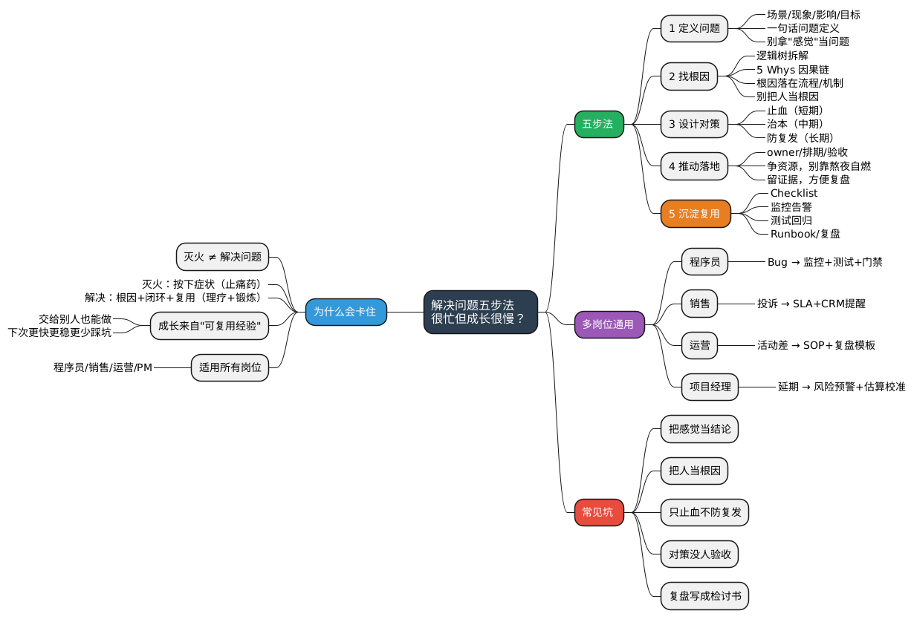

职场工具箱之解决问题五步法：为什么你很忙，但成长很慢？
Posted on Sun 01 February 2026 in Life
| Abstract | 职场工具箱之解决问题五步法 |
|---|---|
| Authors | Walter Fan |
| Category | 职场方法论 |
| Status | v1.1 |
| Updated | 2026-02-02 |
| License | CC-BY-NC-ND 4.0 |
短大纲（给忙人）
展开看看
- **一句话**：你很忙但成长很慢——因为你一直在"解决问题"，却没在"学会解决问题" - **五步法**：定义问题 → 分析原因 → 制定方案 → 执行验证 → 复盘沉淀 - **核心洞察**：大多数人只做了第 3-4 步，跳过了 1-2 和 5 - **应用场景**：技术故障、业务问题、个人成长瓶颈职场工具箱之解决问题五步法：为什么你很忙，但成长很慢？
你是不是也掉进了"忙碌陷阱"？
入职三年，你可能有过这样的困惑：
明明每天加班到很晚，年底述职却说不出亮点。
明明处理了无数问题，但同样的坑还是反复出现。明明很努力，但晋升的总是隔壁工位那个看起来没你忙的同事。
这不是玄学，是方法问题。
我见过太多"职场消防员"——不管是程序员、销售、运营还是项目经理，他们有一个共同特点：
- 群里一 @ 就条件反射：我来处理。
- 客户一投诉就立刻响应：我马上看。
- 老板一问进度就加班顶上：我先扛着。
响应速度一流，但问题永远在排队等你。
为什么？因为你一直在"灭火"，没在"解决问题"。
灭火：把症状按下去，让它别响。
解决问题：找到为什么会响，让它以后少响，最好还能把"处理流程"复制给别人。
灭火像"止痛药"，解决问题像"理疗+锻炼"。止痛药很重要，但你不能把它当健身——吃一辈子止痛药，腰还是会疼。
灭火 ≠ 会解决问题：差别到底在哪？
我见过很多同学（包括早年的我）最大的误区是：
- 把"我把这次搞定了"当成"我解决了问题"
- 把"反应快、能救火"当成"能力强、成长快"
其实真正决定成长速度的，是你有没有形成可复用经验：
- 下次遇到类似问题，你能不能更快、更稳、更少踩坑？
- 你能不能把这套方法交给别人，让别人也能做？
- 你能不能把"个人英雄主义"变成"团队系统能力"？
如果不能，那你只是"这次手速快"。
举几个不同岗位的例子：
| 岗位 | "灭火"模式 | "解决问题"模式 |
|---|---|---|
| 程序员 | 线上出 bug，赶紧 hotfix 一下 | 找到根因，加监控告警，写回归用例，防止复发 |
| 销售 | 客户投诉，赶紧道歉赔礼 | 分析投诉原因，优化跟单流程，更新销售话术模板 |
| 运营 | 活动数据差，赶紧加推广预算 | 复盘用户路径，找到卡点，沉淀活动 SOP |
| 项目经理 | 项目延期，赶紧加人加班 | 分析延期原因，优化排期方法，建立风险预警机制 |
看出来了吗？前者是"事后灭火"，后者是"事后进化"。
解决问题五步法（收藏版）
这套五步法我建议你背下来，甚至贴在工位上（或者贴在你心里也行，别贴老板脸上）。
无论你是什么岗位，这套方法都适用——因为问题的本质是相通的。
定义问题 → 找根因 → 设计对策 → 推动落地 → 沉淀复用
第 1 步：定义问题（不要拿"感觉"当问题）
很多问题死在第 0 步：你以为你们在讨论同一个问题，其实大家在各说各话。
"系统慢了"、"客户不满意"、"项目进度有问题"——这些都不是问题定义，这是症状描述。
一个好问题定义，最好满足三点：
- 可观察：是什么现象？谁看到的？在哪儿看到的？
- 可量化：频率/影响面/成本（没有数据就先给范围，不要装）
- 有边界：这次先解决哪个范围，不解决什么
一句话问题定义模板
在【场景/范围】下，出现【可观察现象】；导致【影响】；我们期望【目标状态】。
不同岗位的例子：
| 岗位 | 模糊描述 | 一句话问题定义 |
|---|---|---|
| 程序员 | "搜索接口慢了" | 在工作日 10:00–12:00 的高峰期，/api/search 偶发超时（P95 从 300ms 飙到 3s），导致用户搜索失败率上升 5%；目标是把 P95 稳定在 500ms 内 |
| 销售 | "客户不满意" | 本季度华东区 A 类客户中，有 12 家（占比 15%）反馈"跟进不及时"，导致续约率下降 8%；目标是把该类投诉控制在 5% 以内 |
| 运营 | "活动效果差" | 618 大促首日，落地页访问量 10 万，但加购转化率仅 2%（行业均值 5%），导致 GMV 缺口 200 万；目标是把转化率提升到 4% |
| 项目经理 | "项目要延期" | Sprint 5 的 8 个用户故事中，有 3 个未能在计划时间内完成（延期 5 天），影响下游依赖团队的排期；目标是延期故事数控制在 1 个以内 |
你会发现：只要这句话写清楚，后面很多争论会自动消失。
小技巧：开会前先让每个人写下自己理解的"问题是什么"，你会发现这些纸条可能完全对不上——这就是为什么有些会开了 2 小时却没结论。
第 2 步：找根因（别急着给药，先搞清楚病灶）
根因分析不是"聪明地猜"，而是"老实地证"。
你可以用两种工具组合拳：
- 逻辑树：把"大问题"拆成可验证的小问题
- 5 Whys：沿着因果链往下挖
重要：不要把人当根因。
"因为小王粗心"、"因为团队不够努力"——这种结论等于没说。人的问题通常是系统问题的外显。
根因链写法（建议用项目 wiki/事故复盘模板固化）
程序员例子：
- 现象：P95 变差
- 为什么？因为 DB 查询耗时上升
- 为什么？因为某个查询没命中索引
- 为什么？因为新增字段参与了过滤但没建索引
- 为什么？因为上线前缺少"慢查询回归检查项"
- 根因（可行动）：发布流程缺少性能回归 gate；数据库变更缺少索引检查清单
销售例子：
- 现象：客户反馈"跟进不及时"
- 为什么？因为客户咨询后超过 24 小时才回复
- 为什么？因为销售同时跟进 50+ 客户，顾不过来
- 为什么？因为客户分配没有按优先级排序
- 为什么？因为 CRM 系统没有设置"高意向客户优先提醒"
- 根因（可行动）：CRM 缺少客户优先级自动标签；跟进 SLA 没有明确标准
项目经理例子：
- 现象：Sprint 延期
- 为什么？因为开发工作量超出预估
- 为什么？因为需求在开发中频繁变更
- 为什么？因为需求评审时产品和开发理解不一致
- 为什么？因为需求文档缺少验收标准和边界说明
- 根因（可行动）：需求模板缺少"验收标准"和"不做什么"字段；评审会缺少"理解确认"环节
看到没？最后落到的是流程/机制/工具的缺口，而不是"某某不行"。
第 3 步：设计对策（对策不是"做更多"，而是"做对的"）
对策至少分三层，不要只做第一层：
- 止血（短期）：先把影响控制住
- 治本（中期）：把根因修掉
- 防复发（长期）：把"下次再来"变成更难发生
三层对策表
| 对策类型 | 目标 | 程序员例子 | 销售例子 | 项目经理例子 |
|---|---|---|---|---|
| 止血 | 先不让用户/客户继续痛 | 降级/熔断/回滚/限流 | 立即道歉+补偿方案 | 砍低优先级需求/协调资源 |
| 治本 | 把根因修掉 | 补索引/改 SQL/优化架构 | 调整客户分配逻辑 | 修订需求模板/增加评审环节 |
| 防复发 | 让同类问题更难再发生 | 加监控/加测试/加发布门禁 | 设 CRM 提醒/建跟进 SLA | 加 Sprint 风险早会/建估算校准机制 |
很多人之所以成长慢，是因为永远停在"止血"，甚至把"止血速度快"当成了本事。
止血确实重要——但如果你永远只会止血，那你就是个"高级灭火器"，而不是"问题解决者"。
第 4 步：推动落地（解决问题不是写方案，是把方案变成现实）
在职场里，"好方案"不稀缺，"能落地的方案"才稀缺。
我见过太多漂亮的 PPT 最后躺在共享盘里吃灰。
落地要做三件事：
1. 拆任务 - 谁做（Owner） - 做什么（具体产出） - 什么时候完成（Deadline） - 验收标准是什么（怎么算"做完了"）
2. 争资源 - 缺人、缺权限、缺窗口期，提前说 - 不要靠"熬夜自燃"来补资源缺口——这不可持续，而且会让别人误以为"不给资源也能搞定"
3. 留证据 - 关键决策、权衡取舍、数据对比，写下来 - 这是你未来的"可复用经验"，也是你述职/晋升时的素材
我很喜欢一句话：
方案不是 PPT，方案是"下一步谁做什么"。
第 5 步：沉淀复用（这一步做不好，成长就会卡住）
这一步是"很忙但成长很慢"的真正分水岭。
你每解决一次问题，至少留下 4 类资产（别写成作文，写成可复用零件）：
四大复用资产
| 资产类型 | 说明 | 程序员例子 | 销售/运营/PM 例子 |
|---|---|---|---|
| 检查清单（Checklist） | 下次排查同类问题，按清单走就不会漏 | 线上问题排查 Checklist | 客户投诉处理 Checklist、活动上线自查单 |
| 监控与告警（Observability） | 让问题更早暴露，别等用户/老板来当 QA | 接口超时告警、异常日志 | 销售跟进 SLA 看板、项目燃尽图预警 |
| 测试与回归（Verifiability） | 把"这次修过了"变成"以后不容易再出" | 单元测试、回归用例 | 流程模拟测试、Checklist 复核 |
| 复盘/运行手册（Living Doc） | 关键路径、关键命令、关键指标、关键回滚方式 | Runbook、事故复盘 | 客户 Case 库、活动复盘模板 |
一句话：把你的脑子，变成团队的资产。
当你的经验变成了团队的标准流程、变成了新人入职的学习材料、变成了工具里的自动化检查——你就完成了从"个人能力"到"系统能力"的跃迁。
这才是真正的"成长"。
实战演练：同一个问题，五步法怎么用？
让我们用一个通用场景来走一遍五步法："项目/任务反复出问题"。
灭火模式（大多数人）
"又出问题了？加班搞定！"
然后下次继续出问题，继续加班。循环往复，996 是日常。
五步法模式
1. 定义问题：
过去 3 个月，我负责的 5 个项目/任务中，有 3 个出现了返工（占比 60%），平均每个返工耗时 2 天，导致整体效率下降约 15%；目标是把返工率控制在 20% 以内。
2. 找根因（5 Whys）： - 为什么返工？→ 交付结果不符合预期 - 为什么不符合预期？→ 对"完成标准"理解不一致 - 为什么理解不一致？→ 开始前没有明确验收标准 - 为什么没明确？→ 习惯性接到任务就开干，没有确认环节 - 根因：任务启动缺少"对齐会议"；交付缺少"验收标准模板"
3. 设计对策： - 止血：当前返工任务，先和需求方确认优先级，砍低价值部分 - 治本：建立任务启动 Checklist，包含"验收标准确认"环节 - 防复发：每个任务开始前必须填写"一句话验收标准"，完成后对照检查
4. 推动落地： - Owner：我自己 - 产出：任务启动 Checklist（本周五前） - 验收：下 3 个任务使用该 Checklist，返工率是否下降
5. 沉淀复用： - 把 Checklist 分享到团队 wiki - 把这次复盘写成 Case Study，作为新人培训材料 - 在周会上分享方法，推动团队采用
你会发现：你做的事情可能没变多，但你每次做完都会"涨技能点"。
避坑指南：五步法最容易翻车的 5 个点
| 坑 | 表现 | 解决方法 |
|---|---|---|
| 坑 1：把"感觉不对"当结论 | "我觉得这个有问题" → 然后大家吵半天 | 先写"一句话问题定义"，写不出来就别急着开工 |
| 坑 2：把"某人操作失误"当根因 | "因为小王粗心" → 然后批评教育完事 | 根因落在流程/机制/工具缺口，人的问题通常是系统问题的外显 |
| 坑 3：只做止血，不做防复发 | "先顶住再说" → 然后一直在"先顶住" | 每次必须产出一个"复用资产"（清单/监控/测试/手册四选一也行） |
| 坑 4：对策堆叠，没人验收 | "我们做了 10 件事" → 但没人知道效果 | 每条对策都要有验收标准（指标/现象/回归用例） |
| 坑 5：复盘写成"检讨书" | "我们深刻反思..." → 然后下次继续 | 复盘目的是让系统更强，不是让人更难受；聚焦于"下次怎么做"而不是"这次谁的错" |
职场新人特别提醒
如果你刚入职不久，这里有几个特别建议：
1. 从小问题开始练手
不要等到出大事才想起五步法。每次遇到小问题，都用这个框架过一遍，慢慢形成肌肉记忆。
2. 主动要复盘
很多团队不主动复盘，或者复盘流于形式。你可以主动提议：
"这次的问题处理完了，我想花 15 分钟写个简单复盘，找下根因和改进点，可以吗？"
这种主动性会让你在领导眼中脱颖而出。
3. 建立自己的"问题库"
每次解决一个问题，就记下来： - 问题是什么 - 根因是什么 - 我是怎么解决的 - 下次遇到类似问题怎么更快
半年后你再看这个库，会发现自己进步神速。
4. 学会"向上管理"
五步法不仅对下有用，对上也有用。当老板问"这个问题怎么回事"时，你可以说：
"问题是 XXX，根因是 YYY，我的对策是 ZZZ，预计什么时候解决，之后我会做什么防止复发。"
比"我在处理"高级一百倍。
实战检查清单（可直接复制到你的项目里）
- [ ] 我能用一句话把问题定义清楚（场景/现象/影响/目标）
- [ ] 我能列出至少 3 个可验证的假设，并有对应数据/证据
- [ ] 我没有把"人"当根因，根因落在了流程/机制/工具层面
- [ ] 对策包含止血 + 治本 + 防复发（至少两层）
- [ ] 每条对策有 owner、截止时间、验收标准
- [ ] 我沉淀了至少一个可复用资产（清单/监控/测试/手册）
- [ ] 我能把这次经验讲给新人听，且新人能照着做
思维导图（PlantUML mindmap）
@startmindmap
<style>
mindmapDiagram {
.root { BackgroundColor #2C3E50; FontColor white; FontSize 16 }
.why { BackgroundColor #3498DB; FontColor white }
.method { BackgroundColor #27AE60; FontColor white }
.example { BackgroundColor #9B59B6; FontColor white }
.reuse { BackgroundColor #E67E22; FontColor white }
.pitfall { BackgroundColor #E74C3C; FontColor white }
}
</style>
*[#2C3E50] 解决问题五步法\n很忙但成长很慢？ <<root>>
left side
**[#3498DB] 为什么会卡住 <<why>>
*** 灭火 ≠ 解决问题
***_ 灭火：按下症状（止痛药）
***_ 解决：根因+闭环+复用（理疗+锻炼）
*** 成长来自"可复用经验"
****_ 交给别人也能做
****_ 下次更快更稳更少踩坑
*** 适用所有岗位
****_ 程序员/销售/运营/PM
right side
**[#27AE60] 五步法 <<method>>
*** 1 定义问题
****_ 场景/现象/影响/目标
****_ 一句话问题定义
****_ 别拿"感觉"当问题
*** 2 找根因
****_ 逻辑树拆解
****_ 5 Whys 因果链
****_ 根因落在流程/机制
****_ 别把人当根因
*** 3 设计对策
****_ 止血（短期）
****_ 治本（中期）
****_ 防复发（长期）
*** 4 推动落地
****_ owner/排期/验收
****_ 争资源，别靠熬夜自燃
****_ 留证据，方便复盘
*** 5 沉淀复用 <<reuse>>
****_ Checklist
****_ 监控告警
****_ 测试回归
****_ Runbook/复盘
**[#9B59B6] 多岗位通用 <<example>>
*** 程序员
****_ Bug → 监控+测试+门禁
*** 销售
****_ 投诉 → SLA+CRM提醒
*** 运营
****_ 活动差 → SOP+复盘模板
*** 项目经理
****_ 延期 → 风险预警+估算校准
**[#E74C3C] 常见坑 <<pitfall>>
*** 把感觉当结论
*** 把人当根因
*** 只止血不防复发
*** 对策没人验收
*** 复盘写成检讨书
@endmindmap

延伸阅读
- A3報告（A3 问题解决） - 丰田发明的一页纸问题解决框架
- 如何进行无指责事后分析（Blameless Postmortem） - 复盘的正确姿势
- 为五问法辩护（5 Whys） - 根因分析的经典方法
- 《丰田模式》 - 问题解决方法论的源头
- 《金字塔原理》 - 结构化思考的必读书
- 《高效能人士的七个习惯》 - 第三章"要事第一"对排优先级特别有用
互动时间
你最近一次"忙得要死，但后来发现是无用功"的经历是什么？
如果按五步法重来一遍，你觉得最该补的是哪一步：定义问题、找根因、还是沉淀复用？
欢迎在评论区分享你的故事，我们一起避坑。
系列回顾
- 4D 总结法
- 黄金圈法则
- TNB 表达模型
- FAB 提案法
- STAR 面试法
- 同理心三方法
- 5W1H + 8C1D
- 艾森豪威尔矩阵
- PDCA 循环
- SMART 原则
- 领导力
- 逻辑树
- 解决问题五步法（本篇）
- 5 个 Why
- 沟通四要素 CARE
- 金字塔原理
- 三点法
- DACI
- 四线复盘法
- RAPID
- 5S 问题处理法
- SWOT 自我定位
- AARRR 漏斗
- 第一性原理
- RACI
- 非暴力沟通
- SCAMPER
- MVP 思维
- ABC 情绪理论
- AI Agent 学职场英语
- 向上管理
- OODA 循环
本作品采用知识共享署名-非商业性使用-禁止演绎 4.0 国际许可协议进行许可。